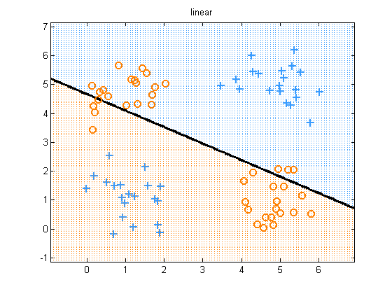
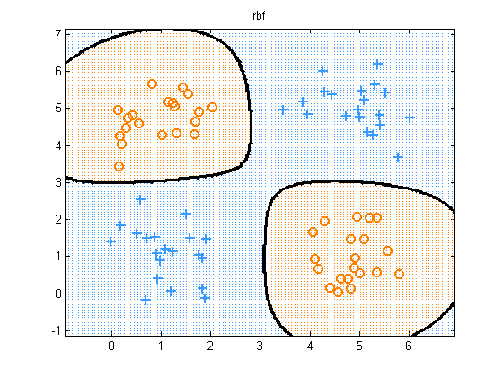
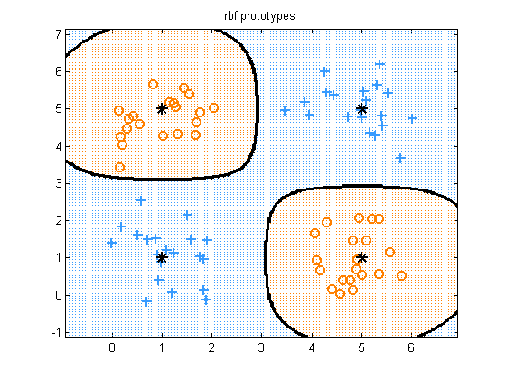
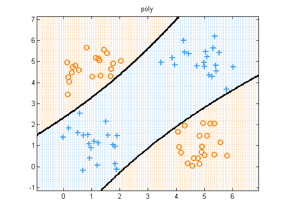

Apply L2 Logistic Regression to the XOR problem
We show how RBF, and polynomial expansions of the features 'solve' it, while using raw features does not.
Contents
function logregXorDemo()
[X, y] = createXORdata(); lambda = 1e-2;
Linear Features
model = logregFit(X, y, 'lambda', lambda); yhat = logregPredict(model, X); errorRate = mean(yhat ~= y); fprintf('Error rate using raw features: %2.f%%\n', 100*errorRate); plotDecisionBoundary(X, y, @(X)logregPredict(model, X)); title('linear'); printPmtkFigure('logregXorLinear')
Error rate using raw features: 49%
Basis Expansions
rbfScale = 1; polydeg = 2; protoTypes = [1 1; 1 5; 5 1; 5 5]; %protoTypes = [1 5; 5 5]; kernels = {@(X1, X2)kernelRbfSigma(X1, X2, rbfScale) @(X1, X2)kernelRbfSigma(X1, protoTypes, rbfScale) @(X1, X2)kernelPoly(X1, X2, polydeg)}; fnames = {'logregXorRbf', 'logregXorRbfProto', 'logregXorPoly'}; titles = {'rbf', 'rbf prototypes', 'poly'}; for i=1:numel(kernels) preproc.kernelFn = kernels{i}; preproc.standardizeX = false; model = logregFit(X, y, 'lambda', lambda, 'preproc', preproc); yhat = logregPredict(model, X); errorRate = mean(yhat ~= y); fprintf('Error rate using %s features: %2.f%%\n', titles{i}, 100*errorRate); predictFcn = @(Xtest)logregPredict(model, Xtest); plotDecisionBoundary(X, y, predictFcn); if i==2 hold on; plot(protoTypes(:, 1), protoTypes(:, 2), '*k', 'linewidth', 2, 'markersize', 10) end title(titles{i}); printPmtkFigure(fnames{i}) end
Error rate using rbf features: 0% Error rate using rbf prototypes features: 0% Error rate using poly features: 0%  
end